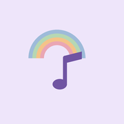

🧪 גרסת בדיקות
איזה שיר נשמע היום?
שני את סדר השירים בעזרת החצים ↑ ו־↓. ״לפי שם״ ממיין אוטומטית לפי א–ת.
אפשר להוסיף שירים דרך גלגל השיניים למעלה.
נסו שם אחר או נקו את החיפוש.
עם המון אהבה וקצת מוזיקה ♡
השירים שמוסיפים כאן, השמות והאייקונים נשמרים במכשיר הזה בלבד.
בודקים את השמירה לאופליין…
אחרי שינויים נכין גיבוי כשהנגן פתוח. לשמירה מחוץ לנגן צריך ללחוץ על שמירה ולבחור ״שמירה בקבצים״.
שם הקובץ קבוע: Backup.little-songs. שמרי באותה תיקייה ובחרי ״החלפה״ אם תתבקשי, כדי לעדכן את הגיבוי הקיים.
הגיבוי כולל את קובצי השמע, השמות והאייקונים של כל הספרייה, כולל הפלייליסטים, הסדר ושיוך השירים. בחירת פלייליסט או חיפוש אינם מצמצמים את הגיבוי. הקובץ אינו עולה לשרת. אישור ״שמרתי״ מסמן שאישרת שהקובץ נשמר.
פתחי את כתובת האתר בספארי, לחצי על שיתוף ואז ״הוספה למסך הבית״. פתחי את האייקון החדש ושמרי את השירים לאופליין מתוכו. אין צורך ב־Scripting או בקיצורים.
ניקוי נתוני האתר עלול למחוק את השירים המקומיים. שמרי את קבצי המקור גם באפליקציית קבצים.
מחיקה כאן לא משנה את הקבצים שב־GitHub.
לכל חג, לכל מצב רוח, ולכל רגע קטן.
אפשר לשייך שיר לכמה פלייליסטים. הסרת סימון אינה מוחקת אותו מהספרייה.
שם הקובץ: Backup.little-songs. אם שמרת באותה תיקייה, בחרי ״החלפה״ כשמופיעה בקשה. אשרי רק לאחר שהקובץ נשמר בפועל.